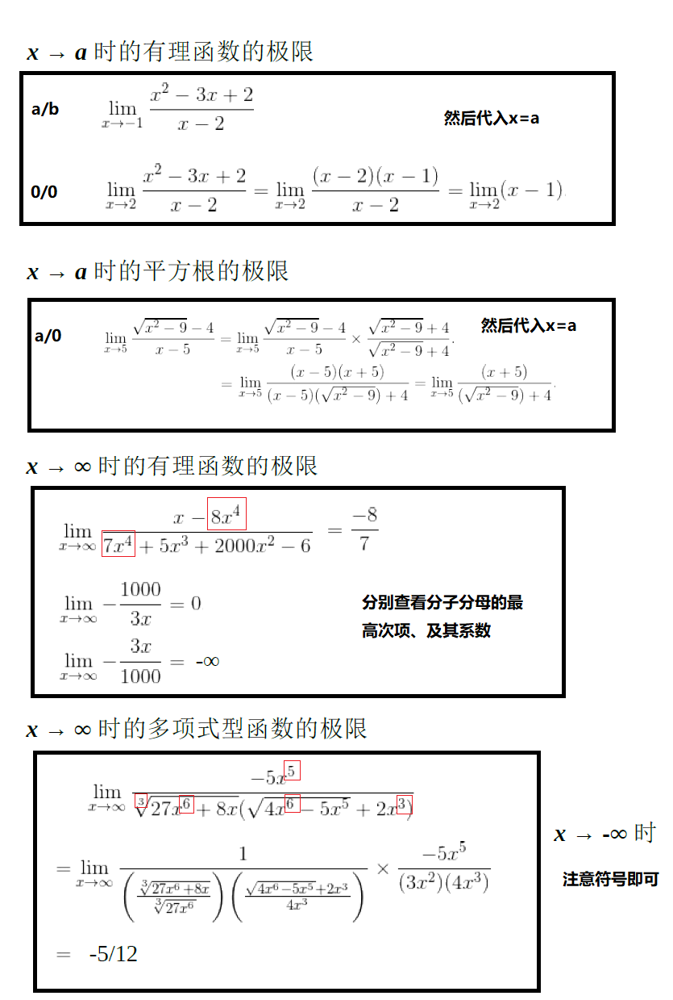

Calculus
教材：《普林斯顿微积分读本》
省略：13章介绍使用导数求解最优化问题（牛顿法：13.3），29章使用积分计算各种体积面积
不确定：瑕点包括极点(函数在该点处取无穷值)和奇点(函数在该点处不连续)
除了极坐标，默认是笛卡尔坐标系（直角坐标系）
函数
- $f:A \rightarrow B$ 是一个函数，也可以看作是一个变换规则，$f(x)=y$表示将这个变换规则应用于变量$x$后得到$y$
- $x$的取值范围$A$称为定义域，$y$的值域（所有可能输出的集合，受$x$取值范围的限制）是上域$B$的一个子集
- 例：$f(x)=x^2$的定义域$R$，上域$R$，值域$R^+$
- 函数$f$的反函数$f^{-1}$
- $f(x)=y$，$f^{-1}(y)=x$
- (图像以 $y=x$ 为镜面翻转)
- 复合函数：$f(x)=m(k(j(x)))=m \circ k \circ j$
- 例：$f(x)=m(k(j(x)))=m \circ k \circ j$
- 一个函数可以是奇函数/偶函数/非奇非偶/即奇又偶；对取值范围内所有的$x$：
- 奇函数：$f(-x)=-f(x)$ 图像原点对称
- 偶函数：$f(-x)=f(x)$ 图像沿$y$轴对称
- 函数有界：对于定义域内的任意的$x$，存在常数 $m$、$M$ 使得 $m \le f(x) \le M$
- 函数$f$在$[a,b]$区间内的平均值 $=\frac{1}{b-a}\int_a^b f(x)dx$
极限
-
$f(x)$在$x=a$处时，左极限$\lim\limits_{x \rightarrow a^-}f(x)=L$，右极限$\lim\limits_{x \rightarrow a^+}f(x)=L$，则极限$\lim\limits_{x \rightarrow a}f(x)=L$
- 上图$h(x),x=3$处因左右极限不相等，其极限不存在(DNE)
- 上图$g(x),x=2$处极限=1
- 上图$\sin(\frac{1}{x}),x=0$处大幅震荡，其极限不存在(DNE)
-
水平渐近线：（x趋向无穷时）
-
三明治定理/夹逼定理：（判定极限存在/求极限）
-
如果 $\lim\limits_{x \rightarrow a}=f(a)$，函数$f(a)$在$x=a$处连续
-
介值定理：（e.g. 用来证明某个方程有解）
-
如果$f$在$[a,b]$上连续，则$f$在$[a,b]$上至少有一个最大值和最小值
求极限
-
求极限方法示例：
 -
洛必达法则：利用导数的知识求极限的值
| 场景 | -- | $x \rightarrow ?$ 时 | 方法 | -- |
|---|---|---|---|---|
| A | $\lim\limits_{x \rightarrow ?}\frac{f(x)}{g(x)}$ | $\frac{0}{0}$ $\frac{\pm \infty}{\pm \infty}$ |
$\lim\limits_{x \rightarrow ?}\frac{f(x)}{g(x)}=\lim\limits_{x \rightarrow ?}\frac{f'(x)}{g'(x)}$ | 求导过程中不能使用商法则！ 解释示例 |
| B1 | $\lim\limits_{x \rightarrow ?}[f(x)-g(x)]$ | $\pm (\infty-\infty)$ | 转换为场景A：通分或乘除共轭表达式 | 示例 |
| B2 | $\lim\limits_{x \rightarrow ?}f(x)g(x)$ | $0 \times \pm\infty$ | 转换为场景A：$\lim\limits_{x \rightarrow ?}f(x)g(x)=\lim\limits_{x \rightarrow ?}\frac{f(x)}{1/g(x)}$ | 建议选较简单的函数取倒数 |
| C | $\lim\limits_{x \rightarrow ?}f(x)^{g(x)}$ | $1^{\pm \infty}$ $0^0$ $\infty^0$ |
先取对数，可转化为场景B，求得其对数的极限：$$\lim\limits_{x \rightarrow ?}\ln[f(x)^{g(x)}]$$ $$=\lim\limits_{x \rightarrow ?}g(x)\ln[f(x)]$$ $$=L$$ 然后返回原式的极限： $$\lim\limits_{x \rightarrow ?}f(x)^{g(x)} = e^L$$ | -- |
{kind=link}
{kind=link}
导数
使用导数来求解微分问题
-
导数的定义：
-
二阶导数就是关于x导二次，三阶就是三次（见上图·示例），...
- 区分：$(\frac{dy}{dx})^2$ 一阶导的平方, $\frac{d^2y}{dx^2}$关于$x$的二阶导, $\frac{dy}{d(x^2)}$关于$x^2$的一阶导
- 注：$f^{(n)}(x)$表示n阶导数
-
可导性：如果$f(x)$在$(a,b)$内可导并且在$a^+$和$b^-$处的导数都存在，则称$f(x)$在闭区间在$[a,b]$上可导；如果一个函数在$x$上可导，那么它在$x$上连续
-
如果对于定义域内的所有$x$，函数$f$可导、且单调，则$f$的反函数$f'$存在：
- $f'(x) >0$，则$f(x)$单调递增，反函数存在
- $f'(x) <0$，则$f(x)$单调递减，反函数存在
- 如果满足 $f'(x) = 0$ 的 $x$ 个数有限，也可以放宽到$\ge 0$或$\le 0$的情况
求导
常用求导法则：
隐函数求导：（关于$x$求导的方程还包含变量$y$，希望求$y$随$x$的变化关系$\frac{dy}{dx}$）
- 示例：求圆 $x^2+y^2=4$ 在圆上各点 $(x,y)$ 处斜率$\frac{dy}{dx}$
- 公式两边加上 $\frac{d}{dx}$，两边各自关于$x$求导：$\frac{d}{dx}(x^2+y^2)=\frac{d}{dx}(4)$
- （隐函数）令$u=y^2$，则$\frac{d}{dx}(y^2)=\frac{du}{dy}\frac{dy}{dx}=2y\frac{dy}{dx}$
- $2x +2y\frac{dy}{dx}=0$，则 $\frac{dy}{dx}=-\frac{x}{y}$
- （拆分 & 使用链式法则）
- 示例：求反函数 $y=f^{-1}(x)$ 的导数
- 公式可写为 $f(y)=x$，两边关于$x$隐函数求导
- $\frac{d}{dx}f(y)=\frac{d}{dx}x=1$
- 设 $u=f(y)$，则 $\frac{d}{dx}f(y)=\frac{du}{dx}=\frac{du}{dy}\frac{dy}{dx}=f'(y)\frac{dy}{dx}$
- 可知 $\frac{dy}{dx}=\frac{1}{f'(y)}$ 即：$\frac{d}{dx}f^{-1}(x)=\frac{1}{f'(f^{-1}(x))}$
导数与函数图像
-
导数$f'(x)$的几何定义是：函数$y=f(x)$在点$(x,y)$处切线的斜率
-
极值定理：如果函数 $f$ 的定义域 开区间$(a,b)$ 内有一点 $c$ 为函数的局部最大值或最小值，则点 $c$ 一定为该函数的临界点，即，$f'(c)=0$ 或 不存在
-
可以从多个临界点中寻找全局最大值或最小值
-
罗尔定理：假设函数 $f$ 在闭区间$[a,b]$ 内连续、在开区间$(a,b)$ 内可导，如果 $f(a)=f(b)$，则开区间$(a,b)$ 内至少存在一点 $c$，使得 $f'(c)=0$ （即：$c$是拐点、或 $f$ 的图像是水平线段）
-
中值定理：假设函数 $f$ 在闭区间$[a,b]$ 内连续、在开区间$(a,b)$ 内可导，则开区间$(a,b)$ 内至少存在一点 $c$，使得 $f'(c)=\frac{f(b)-f(a)}{b-a}$，即函数图像在点$c$处的切线与$a,b$两点间的连线平行（斜率相同）
- 推论：如果对于 $(a,b)$ 内任意 $x$，都有 $f'(x)=0$，则函数在此区间为常函数（水平线段）
- 推论：如果对于定义域内任意 $x$，都有 $f'(x)=g'(x)$，则 $f(x)=g(x)+C$（$C$表示任意常数）
-
二阶导数$f''(x)$的符号意味着函数的凹性
- 区间内始终$f''(x) > 0$：凹向上
- 区间内始终$f''(x) < 0$：凹向下
- $f''(x) = 0$：可能是拐点，也可能不是（如果左右两边点的二阶导数符号相同，说明凹性没有改变、不是拐点）
-
一阶导数 $f'(c)=0$ 时的几种情况
- 使用二阶导数进一步判断
- $f''(c)<0$ 局部最大
- $f''(c)>0$ 局部最小
- $f''(c)=0$ 无法判断
- 使用左右点的一阶导数进一步判断（切线斜率的变化）
- 左正-->右负：局部最大
- 左负-->右正：局部最小
- 左右符号一致：水平拐点
- 使用二阶导数进一步判断
微分方程
- 初值问题（IVP）：已知初始条件与相关的微分方程，可以求得无不定常数的解
- $\frac{dy}{dx}=-2y$，$y(0)=5$
- 求得 $y=5e^-2x$
| 类别 | -- | 可整理为 | 求解微分方程/示例 |
|---|---|---|---|
| 可分离变量 | 一阶 | x、y 所有部分（包括dx、dy）各置于一侧 | 两侧各自求积分 |
| 线性 | 一阶 | $\frac{dy}{dx}+p(x)y=q(x)$ | 两侧乘以积分因子$e^{\int p(x)dx}$后、各自求积分 |
| 常系数 | 一阶齐次 | $\frac{dy}{dx}+ay=0$ | $y=Ae^{-ax}$，A为常数 |
| 常系数 | 二阶齐次 | $ay''+by'+cy=0$ | 求 $at^2+bt+c=0$ 的根，然后代入相应换算公式 |
| 常系数 | 二阶非齐次 | $ay''+by'+cy=f(x)$ | 求 $ay''+by'+cy=0$ 的解 $y_H$，然后根据两式之和 $a(y_H+y_P)''+b(y_H+y_P)'+c(y_H+y_P)=f(x)$ 求得特解 $y_P$，原方程的全解 $y=y_H+y_P$ |
{kind=link}
{kind=link}
{kind=link}
{kind=link}
积分
-
函数 $y=f(x)$ 积分的几何意义：函数 $y=f(x)$ 与$x$轴之间的有向面积（正/负）
- 反函数 $x=f^{-1}(y)$ 积分：函数 $y=f(x)$ 与$y$轴之间的有向面积（正/负）
- 定积分：指定区间内的面积，例如 $\int_a^b f(x)dx$
- 不定积分：“函数$f$的反导数的集合”，例如 $\int f(x)dx$、$\int_a^x f(x)dx$
- 反常积分：$f$在区域内无界，或者变量$x$范围无穷，例如 $\int_{-\infty}^{0} f(x)dx$
-
微积分第一基本定理：如果函数$f$在闭区间$[a,b]$上连续，定义$$F(x)=\int_a^x f(t)dt,\quad x \in [a,b]$$ 则$F$在开区间$(a,b)$内可导，且 $F'(x)=f(x)$，即 $$\frac{d}{dx}\int_a^x f(t)dt = f(x)$$
-
微积分第二基本定理：如果函数$f$在闭区间$[a,b]$上连续，$F$是$f$关于$x$的任意反导数，则有 $$\int_a^b f(x)dx=F(b)-F(a)$$
定积分
- 定积分（黎曼积分）：将$[a,b]$区间分割成 $n \rightarrow \infty$ 块（$mesh \rightarrow 0$）来求 $\int_a^b f(x)dx$
示例
$$\int_0^2 x^2dx = \lim\limits_{n \rightarrow \infty}\sum\limits_{j=1}^n{f(x_j)\frac{1}{n}}=\lim\limits_{n \rightarrow \infty}\sum\limits_{j=1}^n\frac{8j^2}{n^3}=\lim\limits_{n \rightarrow \infty}\frac{8}{n^3}\frac{n(n+1)(2n+1)}{6}=\frac{8}{3}$$ $x_j$可以在当前$mesh$中的任何位置取值（e.g.上和、下和），但只要它足够小，任何取值都将趋近求$\sum\limits_{j=1}^nj^2$
伸缩求和法：$\sum\limits_{x=a}^b[f(x)-f(x-1)]=f(b)-f(a-1)$ $$\sum\limits_{j=1}^n [j^2-(j-1)^2] = \sum\limits_{j=1}^n (2j-1) = n^2 \therefore \sum\limits_{j=1}^nj = \frac{n(n+1)}{2}$$ $$\sum\limits_{j=1}^n [j^3-(j-1)^3] = \sum\limits_{j=1}^n (3j^2-3j+1) = n^3 \therefore \sum\limits_{j=1}^nj^2 = \frac{n(n+1)(2n+1)}{6}$$-
定积分可积：有限个不连续点、函数有界
-
定积分的性质：
-
积分的中值定理：假设函数 $f$ 在闭区间$[a,b]$ 内连续，则开区间$(a,b)$ 内至少存在一点 $c$，使得 $f(c)=\frac{1}{b-a}\int_a^b f(x)dx$（函数$f$在此区间的平均值）
-
对积分式求导、求极限时，一些变形的例子：
不定积分
不定积分其实是关于$x$的函数：$\int f(x)dx = F(x) + C$，其中 $\frac{d}{dx}F(x)=f(x)$
Hints 1：
$F(x)=\int_0^x t^2dt$
$G(x)=\int_a^x t^2dt$
$F(x)=\int_0^a t^2dt+G(x)=C+G(x)$
Hints 2：($h \rightarrow 0$)
$F(x+h)-F(x) = \int_x^{x+h}f(t)dt \approx hf(x)$
反常积分
| 场景如上图示 | 如果极限存在，则积分收敛；否则积分发散 |
|---|---|
| $[a,b]$区间内积分，但a附近无界 | $\int_a^bf(x)dx=\lim\limits_{\epsilon \rightarrow 0^+}\int_{a+\epsilon}^bf(x)dx$ |
| $[a,b]$区间内积分，但b附近无界 | $\int_a^bf(x)dx=\lim\limits_{\epsilon \rightarrow 0^+}\int_{a}^{b-\epsilon}f(x)dx$ |
| $[a,\infty]$区间内积分 | $\int_a^{\infty}f(x)dx = \lim\limits_{N \rightarrow \infty}\int_a^Nf(x)dx$ |
| $[-\infty,b]$区间内积分 | $\int_{-\infty}^bf(x)dx = \lim\limits_{N \rightarrow \infty}\int_{-N}^bf(x)dx$ |
| $[-\infty,\infty]$区间内积分 | $\int_{-\infty}^{\infty}f(x)dx=\int_{-\infty}^{0}f(x)dx+\int_{0}^{\infty}f(x)dx$ |
| Tips | 如果函数有多处瑕点，可以拆成多个积分，保证每部分积分只有一处瑕点；不过只有当每部分积分都收敛时，积分才收敛 |
| 示例 | 实际上常数项可以随意按需拆分，主要关心的还是能否收敛 |
{kind=link}
-
使用比较判别法判断积分是否收敛：（假设--仅当$f,g$非负时）
- 已知 $\int_a^bg(x)dx$ 发散，如果 $[a,b]$ 区间内 $f(x)$ 的图像包裹住 $g(x)$，则确定 $\int_a^bf(x)dx$ 也发散
- $0 \le g(x) \le f(x)$
- 已知 $\int_a^bg(x)dx$ 收敛，如果 $[a,b]$ 区间内 $f(x)$ 的图像被 $g(x)$ 包裹，则确定 $\int_a^bf(x)dx$ 也收敛
- $0 \le f(x) \le g(x)$
- （有点类似夹逼定理，不过没那么严格）
- 已知 $\int_a^bg(x)dx$ 发散，如果 $[a,b]$ 区间内 $f(x)$ 的图像包裹住 $g(x)$，则确定 $\int_a^bf(x)dx$ 也发散
-
使用极限比较判别法判断积分是否收敛：准备一个与 $f(x)$ 在瑕点处近似（敛散性一致）的函数
- 当 $x \rightarrow a$ 时, $f(x) \sim g(x)$ 即 $\lim\limits_{x \rightarrow a}\frac{f(x)}{g(x)}=1$
- 通常使用 $g(x) = \frac{1}{x^p}$ 的形式，称为 p判别法
- 对于有限值 $a>0$，积分 $\int_a^{\infty}\frac{1}{x^p}dx$ 在 $p>1$ 时收敛，在 $p \le 1$ 时发散
- 对于有限值 $a>0$，积分 $\int_0^a\frac{1}{x^p}dx$ 在 $p<1$ 时收敛，在 $p \ge 1$ 时发散
- 一些寻找近似函数的 Tips & 示例
-
绝对收敛判别法：如果 $\int_a^b|f(x)|dx$ 收敛，那么 $\int_a^bf(x)dx$ 也收敛
{kind=link}
{kind=link}
求积分
利用导数和积分可以相互抵消的性质，可以计算积分：
一些求反导数$F(x)$的技巧：18章
换元法
设 $t=g(x)$，则 $\frac{dt}{dx}=g'(x)$ 即 $dt=g'(x)dx$
于是可以将形似如下的方程化简：$$\int f(g(x))g'(x)dx = \int f(t)dt = F(t) + C = F(g(x)) + C$$
求 $\int x^2 \cos(x^3)dx$，设 $t=x^3$
由 $\frac{dt}{dx}=\frac{dx^3}{dx}=3x^2$ 可知 $x=t^{1/3}$、$dx=\frac{dt}{3x^2}=\frac{dt}{3t^{2/3}}$，于是：$\int x^2 \cos(x^3)dx = \int t^{2/3} \cos(t) \frac{dt}{3t^{2/3}} = \frac{1}{3} \int \cos(t)dt = \frac{1}{3} \sin(t) = \frac{1}{3} \sin(x^3)$
定积分：注意不要混淆$x$、$t$范围
$\int_0^{(\pi)^{1/3}} x^2 \cos(x^3)dx = \int_{t=0}^{t=\pi} \cos(t)dt$对于定积分，建议计算出用$x$表示的不定积分后再代入范围数值
分部积分法
$$\int udv = uv - \int vdu$$
推导过程
$$\frac{d}{dx}(uv) = v\frac{du}{dx} +u\frac{dv}{dx}$$ $$\int\frac{d}{dx}(uv)dx = \int v\frac{du}{dx}dx +\int u\frac{dv}{dx}dx$$ $$uv = \int vdu +\int udv$$ $$即 \int udv = uv - \int vdu$$$\int x e^xdx = xe^x - \int e^xdx$
$u=x$ ，对$u$求导得到 $du=dx$$dv=e^xdx$ ，对$dv$求积分得到 $v=e^x$
$\int x^2\sin(x)dx$
$u=x^2$ ，对$u$求导得到 $du=2x$$dv=\sin(x)dx$ ，对$dv$求积分得到 $v=-\cos(x)$
然后对 $2\int(-\cos(x))xdx$ 再来一次分部积分法
$\int \tan^{-1}(x)dx$
$u=\tan^{-1}(x)$ ，对$u$求导得到 $du=\frac{1}{1+x^2}dx$$dv=dx$ ，对$dv$求积分得到 $v=x$
部分分式
$$\int \frac{p(x)}{q(x)}dx=\int \frac{p(x)}{(\dots)(\dots)(\dots)}dx=\int (\frac{a}{(\dots)} + \frac{b}{(\dots)} + \frac{c}{(\dots)})dx$$
{kind=link}
$\int \frac{x+2}{x^2-1}dx$
$$\int \frac{5x^2+x-3}{x^2-1}dx=\int (5+\frac{x+2}{x^2-1})dx = 5x+\int \frac{x+2}{x^2-1}dx$$ $$\int \frac{x+2}{x^2-1}dx = \int \frac{x+2}{(x-1)(x+1)}dx = \int \frac{3/2}{x-1}dx + \int \frac{-1/2}{x+1}dx$$ 随后可以用换元法$t=(分母)^n$求解各部分常见函数
三角函数

-
定义与一些换算：（角度单位 $\pi=180度$）

-
一些值：
-
求极限：
| 导数 | 不定积分 | -- |
|---|---|---|
| $\frac{d}{dx}\sin(x)=\cos(x)$ | $\int \cos(x)dx=\sin(x)+C$ | 求导推理 |
| $\frac{d}{dx}\cos(x)=-\sin(x)$ | $\int \sin(x)dx=-\cos(x)+C$ | -- |
| $\frac{d}{dx}\tan(x)=\sec^2(x)$ | $\int \sec^2(x)dx=\tan(x)+C$ | 求导推理 |
| $\frac{d}{dx}\sec(x)=\sec(x)\tan(x)$ | $\int \sec(x)\tan(x)dx=\sec(x)+C$ | -- |
| $\frac{d}{dx}\cot(x)=-\csc^2(x)$ | $\int \csc^2(x)dx=-\cot(x)+C$ | 求导推理 |
| $\frac{d}{dx}\csc(x)=-\csc(x)\cot(x)$ | $\int \csc(x)\cot(x)dx=-\csc(x)+C$ | -- |
{kind=link}
反三角函数
三角函数的反函数，$\sin^{-1}(x)$ 就是 $arc\sin(x)$；导数、不定积分 详见百科与第十章（此笔记略）
- 常用隐函数求导
- 示例：$y=\sin^{-1}(x)$
- 其导数 $\frac{dy}{dx}=\frac{1}{\sin'(y)}=\frac{1}{\cos(y)}=\frac{1}{\cos(\sin^{-1}(x))}$
指数函数-对数函数
- 指数函数：$b^x$，对数函数：$\log_b(x)$
- $e=\lim\limits_{h \rightarrow 0^+}(1+h)^{1/h}=\lim\limits_{n \rightarrow \infty}(1+\frac{1}{n})^n$
- $e^x=\lim\limits_{n \rightarrow \infty}(1+\frac{x}{n})^n$ 仅当$n$很大时成立
-
$\ln(e)=1$
-
求极限：
| 导数 | 不定积分 |
|---|---|
| $$\frac{d}{dx}a^x=a^x\ln(a)$$ | $\int a^x dx=\frac{a^x}{\ln(a)}+C$ |
| $$\frac{d}{dx}e^{kx}=e^{kx}\ln(e^{k})=ke^{kx}$$ | -- |
| $$\frac{d}{dx}log_a(x)=\frac{1}{x \ln(a)}$$ | -- |
| $$\frac{d}{dx}\ln(x)=\frac{1}{x}$$ | $\int \frac{1}{x}dx=\ln(|x|)+C$ |
对于$f(x)^{g(x)}$形式的方程，一般取它的对数后再隐函数求导： $$y=x^{\sin(x)}$$ $$u=\ln(y)=\ln(x^{\sin(x)})=\sin(x)\ln(x)$$ $$\frac{d}{dx}(\ln(y))=\frac{d}{dx}(\sin(x)\ln(x))$$ $$\frac{1}{y}\frac{dy}{dx}=\cos(x)\ln(x)+\frac{six(x)}{x}$$ $$\frac{dy}{dx}=[\cos(x)\ln(x)+\frac{six(x)}{x}]y$$ 注：$\frac{du}{dx}=\frac{du}{dy}\frac{dy}{dx}=\frac{1}{y}\frac{dy}{dx}$
双曲函数
双曲函数算是指数函数的一种，虽然从名字上看有点像三角函数
| $\sinh(x)=\frac{e^x-e^{-x}}{2}$ | $\cosh(x)=\frac{e^x+e^{-x}}{2}$ | $\tanh(x)=\frac{\sinh(x)}{\cosh(x)}$ |
|---|---|---|
| $csch(x)=\frac{1}{\sinh(x)}$ | $sech(x)=\frac{1}{\cosh(x)}$ | $\coth(x)=\frac{1}{\tanh(x)}$ |
| 导数 | 不定积分 |
|---|---|
| $\frac{d}{dx}\sinh(x)=\cosh(x) $ | $\cosh(x)dx=\sinh(x)+C $ |
| $\frac{d}{dx}\cosh(x)=\sinh(x) $ | $\sinh(x)dx=\cosh(x)+C $ |
| $\frac{d}{dx}\tanh(x)=sech^2(x) $ | ... |
| $\frac{d}{dx}\coth(x)=-csch^2(x) $ | ... |
| $\frac{d}{dx}sech(x)=-sech(x)\tanh(x)$ | ... |
| $\frac{d}{dx}csch(x)=-csch(x)\coth(x)$ | ... |
数列
-
数列 {$a_n$} 可能是有限项，也可能有无穷项；一般可以用一个公式表示
- 等比数列：{2,4,6,...} 即 $a_n=r^n$
- 交错数列：{1,-2,3,-4,...} 正负项交替出现
- 若 $\lim\limits_{n \rightarrow \infty}a_n$ 存在，则数量收敛；否则数列发散
- （数列有点类似变量取正整数的函数）函数的求极限技巧也适用于数列
-
极数 $A_N=\sum\limits_{n=1}^{N}a_n$ 是数列所有项的和
- 若无穷数列的级数 $\lim\limits_{N \rightarrow \infty}A_N$ 存在，则级数收敛；否则级数发散
- 第n项判别法：当 $\lim\limits_{n \rightarrow \infty}a_n \neq 0$ 或不存在时级数发散（但 $\lim\limits_{n \rightarrow \infty}a_n = 0$ 级数不一定收敛！例如 $a_n=\frac{1}{\sqrt{n}}$）
- 比较判别法、极限比较判别法、绝对收敛判别法 也可用来判断级数的收敛与否（借助另一个确定级数收敛性的 $b_n$，参考 反常积分）
- 积分判别法：假设 $f(n)=a_n$ 恒为正且递减，极数 $A_N$ 与 $\int_1^{\infty}f(x)dx$ 同时收敛/发散
- 交错级数判别法：若 $|a_n|$ 的级数收敛，则 $a_n$ 的级数也收敛
- 比式判别法：设 $b_n=\frac{|a_{n+1}|}{|a_{n}|}$ 为 {$a_n$} 相邻两项的绝对值比值
- 若 $\lim\limits_{N \rightarrow \infty}b_n = C < 1$，极数 $A_N$ 收敛
- 对于收敛的等比数列 $a_n=c^n$, (几何级数) $A_N = \lim\limits_{N \rightarrow \infty}\frac{a_1}{1 - a_{n+1}/a_n}$
- 若 $\lim\limits_{N \rightarrow \infty}b_n = C > 1$，极数 $A_N$ 发散
- 若 $\lim\limits_{N \rightarrow \infty}b_n = 1$ 或不存在，无法得出结论
- 若 $\lim\limits_{N \rightarrow \infty}b_n = C < 1$，极数 $A_N$ 收敛
- 根式判别法：设 $b_n=|a_n|^{1/n}$ 为 {$a_n$} 是第n项绝对值的n次方根
- 若 $\lim\limits_{N \rightarrow \infty}b_n = C < 1$，极数 $A_N$ 收敛
- 若 $\lim\limits_{N \rightarrow \infty}b_n = C > 1$，极数 $A_N$ 发散
- 若 $\lim\limits_{N \rightarrow \infty}b_n = 1$ 或不存在，无法得出结论
- 特殊情况：$a_n=\frac{1}{n^p}$ 当 $p>1$时极数收敛、$p \le 1$时极数发散；但不能用以下判别法判断：
- $\lim\limits_{n \rightarrow \infty}a_n = 0$ （第n项判别法）
- 比值极限为1（比式判别法）
- 第n项绝对值的n次方根等于1（根式判别法）
-
一个有用的极限：
- $\lim\limits_{n \rightarrow \infty} \frac{x^n}{n!}=0$ （因其相邻项比值趋近于0）
泰勒多项式
-
泰勒近似定理：若函数 $f$ 在 $x=a$ 处光滑，则可以用N 次泰勒多项式 $P_N(x)=\sum\limits_{n=0}^N\frac{f^{(n)}(a)}{n!}(x-a)^n$ 来近拟 $f$ 在 $x=a$ 附近的值
- 泰勒定理：关于 $x=a$ 的 N阶余项（i.e. 误差） $R_N=\frac{f^{(N+1)}(c)}{(N+1)!}(x-a)^{N+1}$，其中 $c$ 是介于 $x$ 与 $a$ 之间的一个数，依赖于 $x$ 与 $N$，一般不能确定
- $f(a) = P_N(a) + R_N(a)$
- $N \rightarrow \infty$ 时 $P_N(x)$ 称为泰勒级数
-
泰勒级数在 $x=a$ 处一定收敛于 $f(x)$，但对于 $x \neq a$ 处则未必！甚至可能误差巨大，请参照N阶余项的极限（此外，尽量使N很大）
- 示例：$\sum\limits_{n=0}^{\infty}n!x^n$只在 $x=a$ 处收敛
- 计算收敛范围（比式判别法）：$\lim\limits_{n \rightarrow \infty}\frac{a_{n+1}(x-a)^{n+1}}{a_{n}(x-a)^{n}}=L|x-a|<1$ 时收敛，可依此计算 $x$ 在何范围收敛
-
麦克劳林级数：函数 $f$ 关于 $x=0$ 的泰勒级数
| 麦克劳林级数 ($a=0$ 附近) | -- | 收敛范围 |
|---|---|---|
| $e^x = \sum\limits_{n=0}^{\infty}\frac{x^n}{n!} $ | $1+ x + \frac{x^2}{2!}+ \frac{x^3}{3!} + ...$ | 所有实数 |
| $\sin(x)= \sum\limits_{n=0}^{\infty}\frac{(-1)^nx^{2n+1}}{(2n+1)!}$ | $x-\frac{x^3}{3!}+\frac{x^5}{5!}-\frac{x^7}{7!}+...$ | 所有实数 |
| $\cos(x)= \sum\limits_{n=0}^{\infty}\frac{(-1)^nx^{2n}}{(2n)!}$ | $x-\frac{x^2}{2!}+\frac{x^4}{4!}-\frac{x^6}{6!}+...$ | 所有实数 |
| $\frac{1}{1-x} = \sum\limits_{n=0}^{\infty} x^n$ | （比数列求和） | $-1<x<1$ |
| $\ln(1+x)=\sum\limits_{n=1}^{\infty}-\frac{(-1)^nx^n}{n}$ | $x-\frac{x^2}{2}+\frac{x^3}{3}-\frac{x^4}{4}+...$ | $-1 < x \le 1$ |
| $\ln(1-x)=\sum\limits_{n=1}^{\infty}-\frac{x^n}{n}$ | $-x-\frac{x^2}{2}-\frac{x^3}{3}-\frac{x^4}{4}-...$ | $-1 \le x < 1$ |
- 可以通过变量代换的方式得到新的泰勒级数
- 设 $b=x-1$，则对于 $-1 < b \le 1$ 即 $0 < x \le 2$，$\ln(1+b)=\sum\limits_{n=1}^{\infty}-\frac{(-1)^nb^n}{n}$
- 即是 关于 $x=1$ 的泰勒级数 $\ln(x) = \sum\limits_{n=0}^{\infty}-\frac{(-1)^n(x-1)^n}{n}$
- 注意！将 $b=x^2$ 代入3阶多项式 $P_3 = 1 + x + \frac{x^2}{2!}+ \frac{x^3}{3!}$ 后得到的是6阶多项式 $P_6 = 1 + x^2 + \frac{x^4}{2!}+ \frac{x^6}{3!}$ ，N阶多项式指的是其最高阶！
-
若一个幂级数收敛于开区间 $(a,b)$ 上可导函数 $f$，则 对幂级数逐项求导可得在此区间收敛于 $f'$ 的新幂级数：但新幂级数在端点 $a,b$ 处可能发散，需要单独讨论
- $f^{(n)}(a) = P_N^{(n)}(a)$
-
对泰勒级数逐项求积分得到的新级数，其收敛区间与原级数一致：端点 $a,b$ 处收敛性需要单独讨论
-
两个泰勒级数相乘将得到一个收敛于两个函数乘积的新级数
- 一般只关注级数的前几项，归纳总结；示例：
- $e^x\sin(x)=x+x^2+\frac{x^3}{3}+...$
-
Tips：已知泰勒级数的第n项系数包含函数 $f$ 在 $x=a$ 处的n阶导数，故而可依次推断n阶导数的值
- 系数 $a_n=\frac{f^{(n)}(a)}{n!}$，则 $f^{(n)}(a)=n!a_n$
- 假设 $f(x)=e^{x^2}$，已知 $e^{x^2} = \sum\limits_{n=0}^{\infty}\frac{x^{2n}}{n!} $
- 代入 $n=100$，系数 $a_n=\frac{1}{n!}$，则 $f^{(100)}(0)=100!\frac{1}{50!}$
-
Tips：遇到困难的极限问题，可以尝试用麦克劳林级数表示原式中的一些项，然后消解、合并，达到简化的目的，示例
{kind=link}
极坐标
- 在平面直角坐标系中，如果曲线任意一点的坐标 $(x,y)$ 都是某个变量 $t$ 的函数、且由方程组控制的点 $(x,y)$ 都在这条曲线上，则方程为曲线的参数方程，示例：
- $x^2+y^2=9$ 的参数化是：$x=3\cos(t)$, $y=3\sin(t)$, 其中 $0 \le t \le 2\pi$
- 曲线上某点处的切线：$\frac{dy}{dx}=\frac{dy/dt}{dx/dt}=\frac{y'(t)}{x'(t)}$
- e.g. （下文）极坐标曲线的切线 $\frac{dy}{dx}=\frac{y'(\theta)}{x'(\theta)}$

- 极坐标：$(r,\theta)$ 表示以 $r$ 为半径、从 $x$ 轴正方向开始逆时针旋转 $\theta$ 角后所处的位置，如图：
- （$\theta$ 的角度单位：$\pi=180度$）
- 与笛卡尔坐标相互转换：$x=r\cos(\theta)$, $y=r\sin(\theta)$ 满足 $x^2+y^2=r^2$
- Hints
{kind=link}
- Hints: 假设某函数 $f$ 的极坐标方程为 $r=f(\theta)$
{kind=link}
- 极坐标的积分 $\int_{\theta_0}^{\theta_1}\frac{1}{2}r^2d\theta$
{kind=link}
复数
- 创造一个 -1 的平方根，称为 $i$，即 $i^2=-1$；虚数 $yi$ 的平方是负数
-
形为 $z=x+yi$ 的数称为复数，其共轭复数 $\overline{z}=x-yi$
- $(x+yi)(x-yi)=x^2+y^2$ 即 $z\overline{z}=|z|^2$
- $(1+2i)+(1+i)=2+3i$
- $\frac{2-3i}{-6-7i}=\frac{(2-3i)(-6+7i)}{(-6-7i)(-6+7i)}=\frac{9+32i}{85}$
-
二次方程 $ax^2+bx+c=0$ 的解：$x=\frac{-b \pm \sqrt{b^2-4ac}}{2}$
-
复指数 $e^{x+yi}=e^xe^{yi}$
-
复平面上横轴为实数轴、纵轴为复数轴，图示
- 模 $|z|$ 是复平面中原点到点 $z$ 的距离
-
若复平面内 $(x,y)$ 与极坐标内 $(r,\theta)$ 是相同的点，则复数：$z=x+iy=r\cos(\theta)+ir\sin(\theta)=re^{i\theta}$ 为复数的极坐标形式
- 模 $|z|=r$；角 $\theta$ 被称为 $z$ 的辐角，写为 $arg(z)$；有时 $z$ 的极坐标形式也被称为 “模-辐角”模式
- 例：对于复数 $-1+0i=\cos(\pi)+i\sin(\pi)$ 有极坐标形式 $1e^{i\pi}$，其笛卡尔坐标 $(0,1)$ 有极坐标 $(1,\pi)$
- （r=1时）欧拉公式 $e^{i\theta}=\cos(\theta)+i\sin(\theta)$，图示
{kind=link}
{kind=link}
极坐标形式的用法：
-
简化乘法、取幂的运算
- $(1-i)^{99}=(\sqrt{2}e^{i(7\pi/4)})^{99}=2^{99/2}e^{i(693\pi/4)}=2^{99/2}[\cos(\frac{693\pi}{4})+i\sin(\frac{693\pi}{4})]=2^{99/2}(-\frac{1}{\sqrt{2}}-i\frac{1}{\sqrt{2}})$
-
解 $z^n=w$ 方程（求解复数 $w$ 的n次方根 $z$）
- 已知 $z^5=-\sqrt{3}+i = 2e^{i(5\pi/6 +2k\pi)}$
- （k=0时）可解得其中一个解 $z=2^{1/5}e^{i\pi/6}$
-
解 $e^z=w$ （求解 $z=\ln(w)$）
- 已知 $e^z=e^xe^{iy}=-\sqrt{3}+i = 2e^{i(5\pi/6 +2k\pi)}$
- 则问题分解为两个方程：$e^x=2$，$e^{iy}=e^{i(5\pi/6 +2k\pi)}$
- 解得 $z=\ln(2) + i(5\pi/6 +2k\pi)$
-
三角级数的系数为 {$a_n$}、{$b_n$}，形如 $\sum\limits_{n=0}^{\infty}(a_n\cos(n\theta)+b_n\sin(n\theta))$，可化简为幂级数
- 对于级数 $\sum\limits_{n=0}^{\infty}\frac{\sin(n\theta)}{n!}$，有其互补级数 $\sum\limits_{n=0}^{\infty}\frac{\cos(n\theta)}{n!}$
- 根据欧拉公式，$\sum\limits_{n=0}^{\infty}\frac{\cos(n\theta)}{n!}+i\sum\limits_{n=0}^{\infty}\frac{\sin(n\theta)}{n!}=\sum\limits_{n=0}^{\infty}\frac{e^{i(n\theta)}}{n!}=e^{e^{i\theta}}$
- （展开极坐标形式）$e^{e^{i\theta}}=e^{\cos(\theta)+i\sin(\theta)}$
- （展开极坐标形式）$e^{i\sin(\theta)}=\cos(\sin(\theta))+i\sin(\sin(\theta))$
- 于是可知 $\sum\limits_{n=0}^{\infty}\frac{\cos(n\theta)}{n!}+i\sum\limits_{n=0}^{\infty}\frac{\sin(n\theta)}{n!}=e^{\cos(\theta)}[\cos(\sin(\theta))+i\sin(\sin(\theta))]$，原级数与其互补级数分别对应着复数的虚部与实部